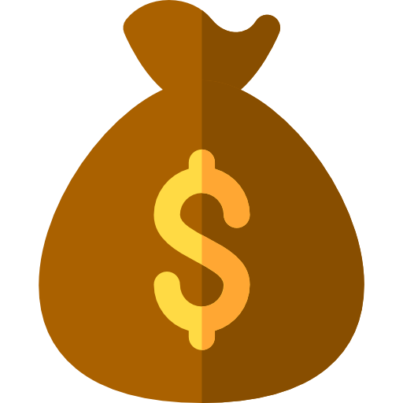
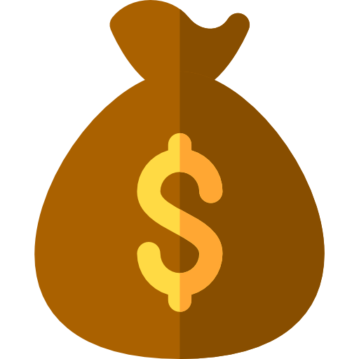
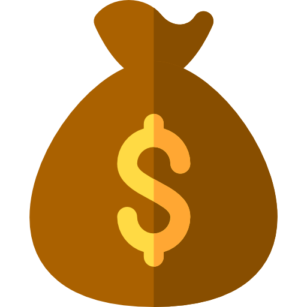

Водород, пропанол, дизель, сжатый воздух... заполните его всем, что вам подходит, и летите дальше!

Цель: собрать $6000
1
покровитель
60
дни до конца сбора
Содержание проекта |
|||
|---|---|---|---|
| История | Бюджет проекта | Риски | Экологические обязательства |
Обладая всесторонним пониманием авионики, авиации, аэродинамики и полетов... я стремлюсь сделать «Дрон для всех».
Преимущества дрона
Реализуя рабочие принципы в полете, такие как турбовальные двигатели с импеллерным приводом, я подготовил чертежи для создания дешевого (необходимо немного материалов), механического (без электроники), самодельного дрона для всех, чтобы использовать... (первый прототип : Одноместный) ...Все, что мне нужно, это деньги на материалы, тестирование и сборку.
Ориентируясь на обычного человека, это может работать и в промышленности, и я был бы рад поделиться планами с миром.
Когда я изготовлю, протестирую и испытаю прототип, я планирую выпустить полные поясняющие видео о дроне («Как это сделано») на социальных платформах, таких как Facebook/YouTube и т.д.
НЕТ ЗАВОДА ДЛЯ ЗАПАТЕНТОВАНИЯ СВОЕГО ПРОЕКТА Я хочу бесплатно раздать дрон людям, поэтому, кем бы вы ни были, если у вас есть материалы и знания, вы можете сделать его самостоятельно, с другими или со своими близкими.
Физические лица: возьмите под контроль свою жизнь и летайте туда, куда хотите/ можете (в соответствии с законом/в зависимости от местоположения и законодательства страны).
Промышленность: новый предмет, который можно производить и улучшать по желанию отрасли, понимая, что нет патента, что, в свою очередь, создает финансовую конкуренцию для улучшения и максимального использования этого типа дронов. Предоставление конечному потребителю еще лучших вариантов.
Теперь... Проект будет идти шаг за шагом, и я планирую сначала создать движок.
Затем я хочу опубликовать видеоролики здесь, на Kickstarter, показывающие сборку двигателя, сборку ротора, сборку рамы и т.д.
Для транспортных средств, которые поворачивают за угол, едут вверх и вниз по холмам ... они могут быть забавными, но они тратят топливо, а для персонала скорой помощи и других вы едете только из A в B или, возможно, из A в B в C, ну, если бы мы могли сократить это время вы можете сэкономить не только расстояние и топливо, но и жизнь и время! Вы бы ехали по прямой, если бы эта машина использовалась для работы.
Риски: - Посадка - я хочу сделать только 1 циферблат (топливо), и этот
индикатор должен указывать на то, что вы приземляетесь (или близко к земле, на низкой скорости)
до того, как закончится топливо. Задачи: - Помните - я раздам этот план бесплатно, и
каждый строитель своей собственной версии ZoneGolfDrone должен изучить Правила и
нормы полетов, а также меры безопасности полетов в своей области/стране.
Долговечный дизайн
Требуется немного материалов, простой дизайн, меньше вещей, которые могут пойти не так.
Возможность повторного использования и переработки
Вам придется сделать это самостоятельно; Это дело каждого производителя дронов, поэтому упаковки пока не будет. Некоторые части могут быть изменены действительно легко.
Устойчивые материалы
Нержавеющая сталь, углеродное волокно, смазочное масло (может быть натуральным)
Экологически чистые заводы
Поскольку я создам только прототип, а благодаря его простому дизайну на данном этапе не будет необходимости в какой-либо настоящей фабрике.